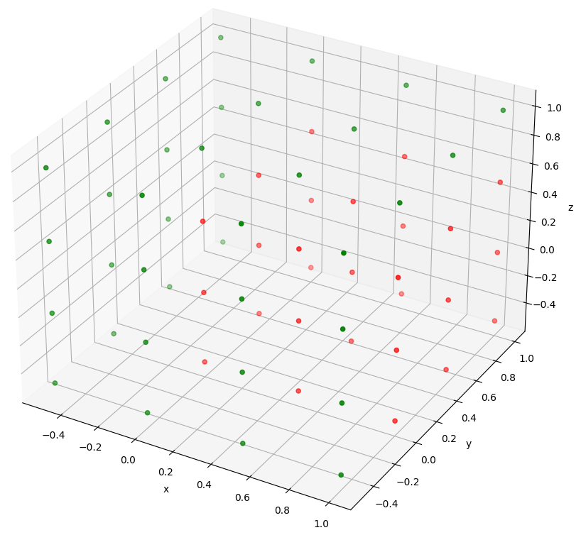

util¶
Miscellaneous utilities.
This module contains various utility functions.
Functions¶
|
Initial prototype function to convert dict result from DynamicsSimulator |
|
Compare the results of a baseline simulation with the results of a new different simulation. |
|
Compute Pareto optimums from a set of points. |
|
Split the state history into a distinct state histories for each body. |
|
Convert a flattened matrix into a matrix. |
- result2array(result: dict[float, ndarray])[source]¶
Initial prototype function to convert dict result from DynamicsSimulator
The state_history and dependent_history retrieved from classes deriving from the
SingleArcSimulatorreturn these time series as a mapping illustrated by:state_history = { t[0]: np.array([pos_x[0], pos_y[0], pos_z[0], vel_x[0], vel_y[0], vel_z[0]]), t[1]: np.array([pos_x[1], pos_y[1], pos_z[1], vel_x[1], vel_y[1], vel_z[1]]), t[2]: np.array([pos_x[2], pos_y[2], pos_z[2], vel_x[2], vel_y[2], vel_z[2]]), # ... clipped t[-1]: np.array([pos_x[-1], pos_y[-1], pos_z[-1], vel_x[-1], vel_y[-1], vel_z[-1]]), }
result2array is a utility function to convert the above into the more conventional
numpy.ndarrayas illustrated by:states_array = np.array([ [t[0], pos_x[0], pos_y[0], pos_z[0], vel_x[0], vel_y[0], vel_z[0]], [t[1], pos_x[1], pos_y[1], pos_z[1], vel_x[1], vel_y[1], vel_z[1]], [t[2], pos_x[2], pos_y[2], pos_z[2], vel_x[2], vel_y[2], vel_z[2]], # ... clipped [t[-1], pos_x[-1], pos_y[-1], pos_z[-1], vel_x[-1], vel_y[-1], vel_z[-1]], ])
- Parameters:
result (Dict[float, numpy.ndarray]) – Dictionary mapping the simulation time steps to the propagated state time series.
- Returns:
array – Array of converted results. First column is time.
- Return type:
- compare_results(baseline_results: dict[float, ndarray], new_results: dict[float, ndarray], difference_epochs: list[float])[source]¶
Compare the results of a baseline simulation with the results of a new different simulation.
This uses a 8th-order Lagrange interpolator to compute the difference in state of the two simulations at specified epochs. Alternatively, the dependent variables can be input instead of the states, to compute the difference in dependent variables at these epochs.
- Parameters:
baseline_results (Dict[float, numpy.ndarray]) – Dictionary mapping the simulation time steps to the propagated state time series of the baseline simulation.
new_results (Dict[float, numpy.ndarray]) – Dictionary mapping the simulation time steps to the propagated state time series of a new simulation different from the baseline.
difference_epochs (numpy.array or list) – Array containing the epochs at which to compute the difference between the results from the distinct simulations.
- Returns:
results_comparison – Dictionary with difference_epochs as keys, and values corresponding to the difference between the baseline results and the new results.
- Return type:
Dict[float, numpy.ndarray]
Examples
# Create a first orbital simulation around Earth simulation_baseline = SingleArcSimulator(..., integrator_settings, ...) # Extract the simulation epochs for the baseline epochs_baseline = list(simulation_baseline.state_history.keys()) # Create the same orbital simulation with a lower tolerance for the integrator simulation_faster = SingleArcSimulator(..., integrator_settings_lower_tolerance, ...) # Setup a list of epochs starting at the beginning of the baseline simulation and spanning 3 hours, with a timestep of 30 seconds compare_times = np.arange(epochs_baseline[0], epochs_baseline[0]+3*24*3600, 30) # Compute the difference between the two simulations simulations_difference = util.compare_results(simulation_baseline, simulation_faster, compare_times)
- pareto_optimums(_points: list, operator: None | list[Callable] = None)[source]¶
Compute Pareto optimums from a set of points.
These points are all individually optimums, meaning that to be better in one dimension, they have to be worse in another one.
This function also allows to specify wether each dimension (which can be seen as an optimisation objective), should be minimised or maximised.
The set of points can indicate 2D or 3D coordinates, but can also extend to as many dimensions (and objectives) as one wants.
- Parameters:
points (list or numpy.ndarray) – Multi-dimensional list that contains the set of points to compute Pareto optimums from. If the points are spread in 3D, this list should have 3 columns, and as many rows as there are points.
operator (None or list[min or max], optional, default=None) – If None, it will be considered that the optimums are the minimums of each axis (dimension). Otherwise, a list of min or max functions can be passed in this input, to specify whether a point along a given dimension should be minimum or maximum to be considered optimum.
Examples
The following code defines a set of equispaced points in 3 dimensions, with spacing of 0.5, ranging from -0.5 to 1.
Wether each of these points is a Pareto optimum is then computed, taking into account that an optimum is a minimum for x and y, and a maximum for z.
Then, a 3D plot is made, showing the Pareto optimum points in green, and the other ones in red. The plot generated by this example code can be seen in the image below.
# Define coordinates at which we want points coordinates = [-0.5, 0, 0.5, 1] # Assemble every possible combination of the coordinates to make the set of points points = np.asarray([[i, j, k] for i in coordinates for j in coordinates for k in coordinates]) # Compute which points are Pareto Optimums, when taking the minimum for x and y, and maximum for z pareto_optimums = TU.pareto_optimums(points, operator=[min, min, max]) # Create a matplotlib.pyplot figure fig = plt.figure() # Add axis with a 3D projection to the figure ax = fig.add_subplot(projection='3d') # Define a color green for the Pareto Optimums (computed as 'True'). Others are red color = ["green" if opti else "red" for opti in pareto_optimums] # Plot all points with their color ax.scatter(points[:,0], points[:,1], points[:,2], c=color) # Add axis labels ax.set_xlabel("x"), ax.set_ylabel("y"), ax.set_zlabel("z") # Show the plot plt.show()
{kind=link}
- split_history(state_history: dict[float, ndarray], propagator_settings: propagator.PropagatorSettings)[source]¶
Split the state history into a distinct state histories for each body.
Creates a dictionnary of state histories based on the unified state_history from the propagation of multiple bodies. Each dictionnary key contains the name of a propagated body, and the value is the state history for the given propagated body.
- Parameters:
state_history (Dict[float, numpy.ndarray]) – Dictionary mapping the simulation time steps to the propagated state time series.
propagator_settings (tudatpy.kernel.numerical_simulation.propagation_setup.propagator.PropagatorSettings) – Settings used for the propagation.
- Returns:
state_history_book – Dictionnary containing the name of the propagated body as key, and the state history as value.
- Return type:
Dict[str,[Dict[float, numpy.ndarray]]]
- vector2matrix(flat_matrix: ndarray)[source]¶
Convert a flattened matrix into a matrix.
Following Tudat standards, a rotation matrix is returned as a nine-entry vector in the dependent variable output, where entry (i,j) of the matrix is stored in entry (3i+j) of the vector with i,j = 0,1,2. This is detailled in the
inertial_to_body_fixed_rotation_frame()docs.- Parameters:
flat_matrix (numpy.ndarray) – Vector containing a flattened rotation matrix.
- Returns:
rotation_matrix – Rotation matrix (3x3 orthogonal matrix).
- Return type:
Classes¶
|
Redirect any print that is sent by a noisy function by encapsulating it with this class. |
- class redirect_std(redirect_file_path: None | str = None, redirect_out: bool = True, redirect_err: bool = True)[source]¶
Redirect any print that is sent by a noisy function by encapsulating it with this class.
The print will successfully be redirected even if they are sent by a C++ function (or from other language).
Exceptions that are raised will still show in the terminal as excepted.
- Parameters:
redirect_file_path (None or string, optional, default=None) – If None, the prints are redirected to Dev Null, and are thus suppressed. Else, redirect_file specifies in what file the messages are saved to.
redirect_out (Boolean, optional, default=True) – If True, redirect anything that is sent to the terminal trough the STD OUT method.
redirect_err (Boolean, optional, default=True) – If True, redirect anything that is sent to the terminal trough the STD ERR method.
Examples
The following code will for instance run a single arc simulation with no print to the console. Any outputs that would normally be printed on the terminal are save in the file C:/log/single_arc_log.txt.
with util.redirect_std(redirect_file_path="C:/log/single_arc_log.txt"): simulation_baseline = SingleArcSimulator(...)